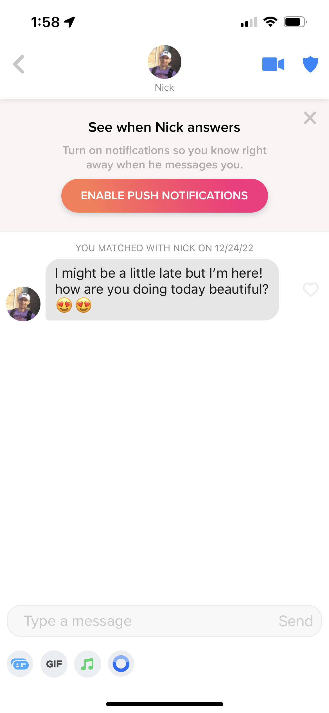
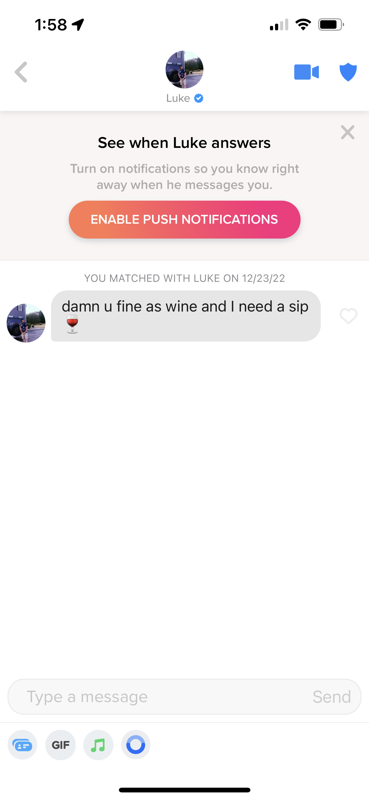
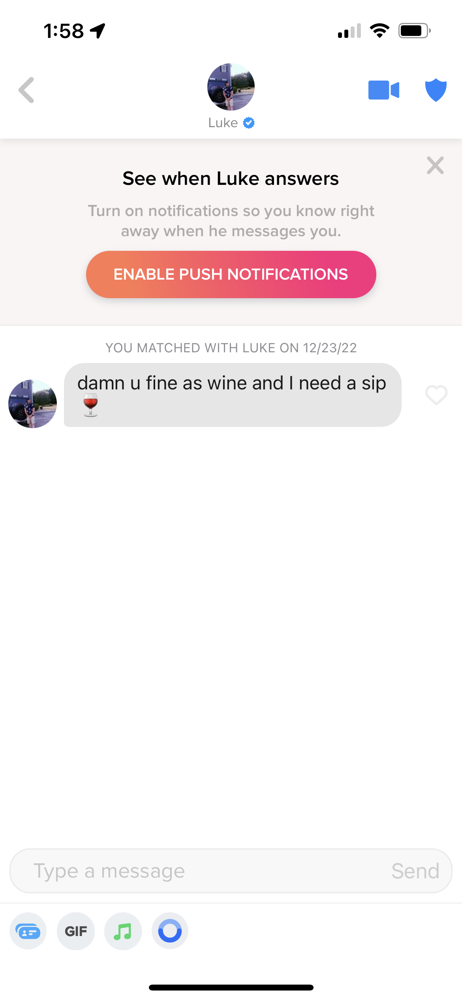

Conversing
Congrats, you managed to match with a woman (thanks to my tips, obviously). Your photos were aloof enough, your bio quirky enough. Now it’s show time. The number one rule for sliding into a woman’s DMs is to chill tf out. Some of you just try way too hard and it’s off putting. Treat women like you would a stranger’s dog: Approach cautiously with your head down, raise your hand unalarmingly and let them sniff it, then wait for them to give you the green light to advance.
Do:
Reach out first: Your chances of seeing a girl in person are significantly higher if you slide in first. Girls rarely do. They are waiting for you to make the first move. And it’s not anti-feminist of us, we just like to make you work for it a little. So do that work.
Exclamation points: A classic “Hi!” as your initial outreach is, frankly, adorable to us. Enthusiastic but not overbearing and makes your interest known without being too forward.
Ask them about themselves: Here I am once again spoon-feeding you the bare minimum, but it’s necessary. Believe it or not, women are actually interesting and have things to say. Express interest in them by asking insightful (but not overly intrusive) questions.
Ask for her number: That’s right. Not her “snap,” not her “insta.” Type the words “Can I get your number?” Just like that. So easy. And it truly makes a difference to women. “Got snap?” is incredibly degrading. Get her snap after you’ve texted for a bit. But phone numbers always come first.
Don’t:
Pick-up lines: No one thinks it’s cute, much less suave.
Too many emojis: We like having to guess at your tone a little bit. Emojis read like you are stressed about how they will interpret your texts. Trust that women can, in fact, read. And if you’re worried about how they’ll take something sans emoji, maybe you shouldn’t be saying it in the first place.
Laughing-crying-face emojis: They’re annoying. Annoying enough to merit their own bullet point.
Being a nice guy: Don’t be overly sweet. It’s unattractive and gives off a vibe of desperation. There is a hard line between being mean and having self respect, of course, but you can afford to be a little wry and dare I say sassy. If you don’t know the difference between being wry and being mean, you have bigger issues than your love life. But just don’t be suffocatingly nice. It’s icky.
Ask for their contact info right away: At least pretend like you care about what is inside a girl’s head. Converse via Tinder for a bit before asking for her number.


 
